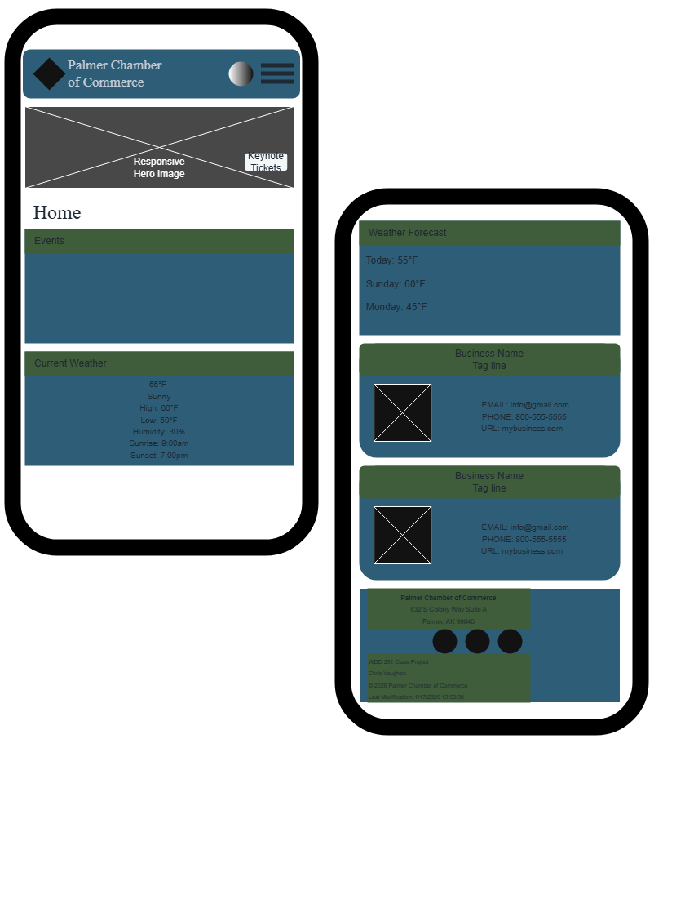
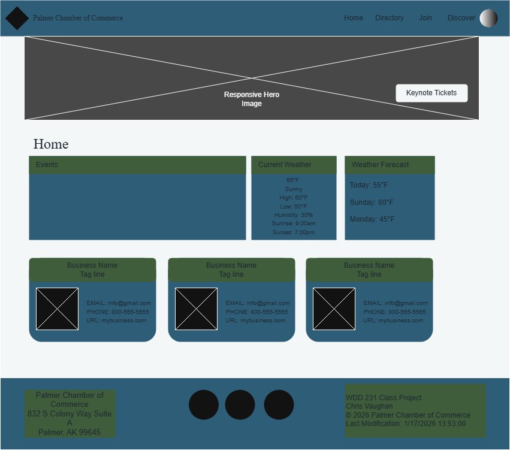
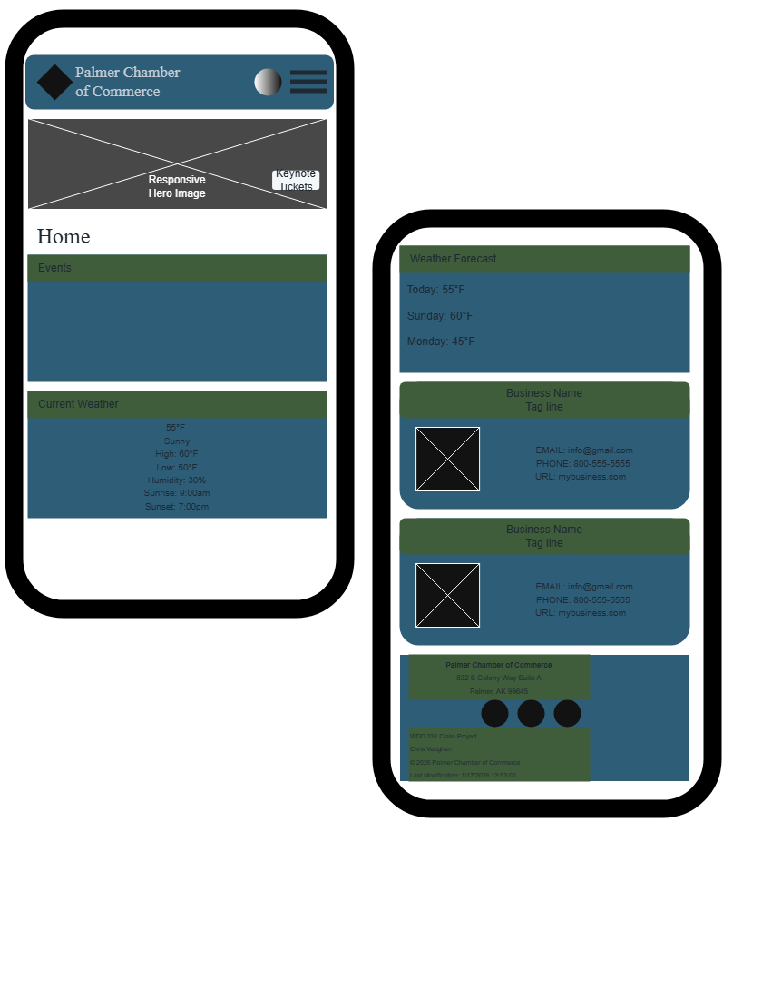
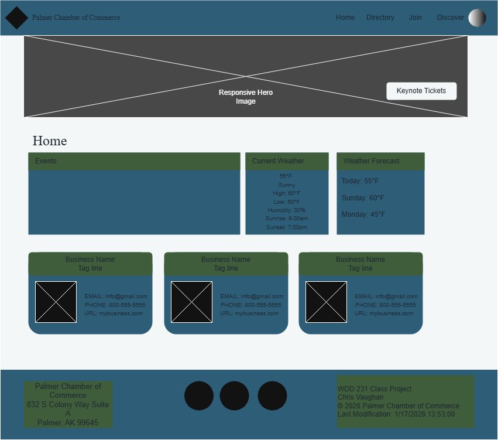

This website will serve as a resource hub for businesses in the city of Palmer. The site will provide information on local events, host networking opportunities, create business directories, and encourage local shopping. It aims to promote local economic growth, support local businesses, and foster a sense of community between the businesses. This website will serve as the landing page
Target Market
Business owners and patrons in the city of Palmer and surrounding areas,
including entrepreneurs, corporate decision-makers, and new residents
seeking community and economic opportunities.
Site Goals
Improve member engagement by providing valuable resources and networking opportunities.
Attract new businesses and encourage economic development in the community.
Improve the visibility and reputation of the chamber as a trusted authority in local business matters.
User Personas
Small Business Owner
Name: Sarah Mitchell
Age: 42
Occupation: Owner of a local café and bakery in downtown Palmer
Goals
Promote events, specials, and seasonal offerings
Connect with other local businesses and vendors
Access city regulations, permits, and business resources
Needs & Behaviors
Visits the Chamber site monthly for event calendars and resources
Uses both desktop and mobile devices
Prefers straightforward navigation and quick access to forms
Pain Points
Limited time to dig through complicated websites
Corporate Executive
Name: David Reynolds
Age: 55
Occupation: Regional Operations Director for an energy/logistics company
Goals
Evaluate Palmer as a location for expansion or partnerships
Understand economic conditions, workforce, and infrastructure
Identify key contacts and leadership in the community
Needs & Behaviors
Skims content quickly, mostly on desktop
Looks for credibility, professionalism, and data-driven content
Values clear calls to action and contact information
Pain Points
Overly casual design that reduces trust
Lack of concise, high-level information
The New Resident
Name: Emily Carter
Age: 29
Occupation: Remote marketing specialist
Moved From: Pacific Northwest
Goals
Learn about Palmer’s community, businesses, and events
Discover family-friendly activities and local services
Feel connected and welcomed
Needs & Behaviors
Browses on mobile first
Responds well to visuals and community storytelling
Uses the site weekly during the first few months after moving
Pain Points
Feeling overwhelmed by unfamiliar local systems
Difficulty finding “what’s happening” information
Scenarios
A local business owner wants to join the chamber to network and visits the
website to find membership benefits, fees, and the application process.
A community member browses the website to find upcoming events and
workshops and registers for activities of interest.
A visitor considering relocation explores the website to learn about
local businesses, workforce availability, and quality of life in Palmer.
SEO Plan
Use relevant keywords in site descriptions, content, and blog posts.
Verify the site on Google’s Business Profile.
Obtain inbound links from member businesses to improve search rankings.
Embed Google Analytics across all site pages to track performance.
Color Schema
Primary Color: Glacier Blue (#2E5E77)
Secondary Color: Spruce Green (#3F5D3A)
Background Color: Snow White / Frosted Gray (#F4F7F8)
 


